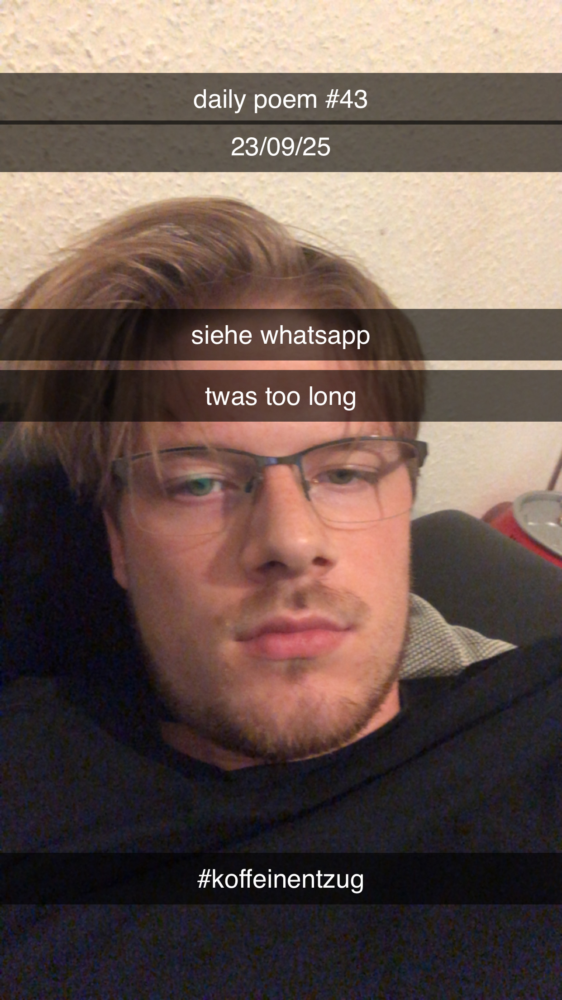

Koffeinentzug
Beendet, die Beziehung
Zum alten Kameraden –
Eine schwere Entscheidung,
Doch es ist besser so.
Ich setz' die Tasse ab –
Der letzte Schluck im Munde,
Ich nehm' ihn, und ich weiß:
Jetzt geh' ich vor die Hunde.
Ein Tag später und ich schwächel' –
Der Entzug setzt mir zu;
Mein Denken ist verdichtet,
Und ich bin dauermüde.
Auf dem Rückweg durch das Grün
Werd' ich auch nicht heiter –
Abgebremst von Abstinenz
Von Optimismus lauf' ich weiter.
Und denk' an so viel Schlechtes:
Vertane Chancen, eig'ne Fehler –
Die Muster meiner Unzulänglichkeit...
Und immer noch bin ich so verdammt müde.
Zwei Tage später –
Viermal schon geschlafen –
Und trotz der ganzen Ruh'
Und nur geringer Arbeit
Häng' ich schlapp im Stuhl
Und will auch jetzt nur in mein Bett.
Auf dem Heimweg an der frischen Luft,
Da geht's mir wieder besser –
Die Bewegung und bewusstes Atmen
Besänftigen mein' Kopf.
Zuhaus' fang' ich zu lesen an,
Und hätt' ich's mal davor getan –
Ich erkenn' das Leid von gestern
Als naturgesandte Folge.
Abend – immer noch am zweiten Tage –
Bereits ein fünftes Mal geruht,
Und mit genügend Wasser
Geht's mir langsam wieder gut.
